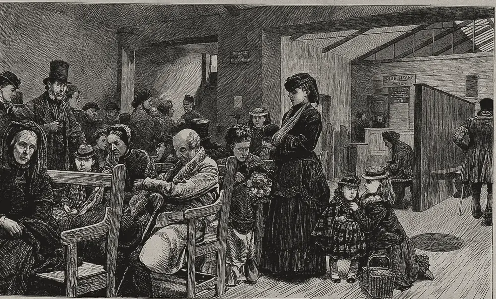

· Edición 20 · 6 min de lectura
Prestarles a las EPS para que paguen: el salvavidas que vuelve cada pocos años

Grabado en madera de autor sin identificar, 1872 · CC BY 4.0, colección Wellcome, vía Wikimedia Commons
Prestarles a las EPS para que paguen: el salvavidas que vuelve cada pocos años
Ver todo el tema, de principio a fin →
En pocas palabras. El Gobierno propone que la Adres, la entidad que administra el dinero de la salud pública, les preste a las EPS para pagar los medicamentos y procedimientos que deben. Ayuda a los pacientes que esperan hoy. Pero no es la primera vez: Colombia ya ha rescatado a las EPS varias veces, y cada vez la deuda vuelve a crecer.
Qué pasó. Piense en un amigo que le pide prestado para pagar la tarjeta. Usted le presta. Al año, vuelve a pedir, porque su sueldo no ha cambiado. El préstamo resolvió el mes, no el problema.
El 2 de octubre, el Ministerio de Salud publicó el borrador de una resolución con estas reglas:
- Para qué. Pagar medicamentos y procedimientos que las EPS reportaron como pendientes entre el 1 y el 20 de septiembre.
- A quién va el dinero. No a las EPS: la Adres les paga directo a clínicas, hospitales y proveedores. La EPS queda debiendo.
- Cuánto cobra. IPC + 0: la deuda solo sube con la inflación. Es prestar sin ganar nada.
- En cuánto tiempo. Hasta 24 meses: un año sin pagar y otro para devolver.
- Quién queda por fuera. Las EPS que se están liquidando, es decir, cerrando.
- Cuánto dinero. No lo dice. El monto lo definirá después el Ministerio.
El borrador recibe comentarios hasta el 7 de octubre. Es la pieza financiera del plan de choque que el Gobierno anunció en septiembre para 1.069.196 personas: más de 700.000 esperan un medicamento y más de 300.000, un procedimiento.
La espera se ve en las ciudades. El 3 de octubre, Asocapitales, la asociación de ciudades capitales, presentó un diagnóstico: de 31 capitales, 15 están en riesgo crítico para seguir prestando salud y 16 en riesgo alto. En 29, la falta de medicamentos ya es un evento crítico. Y de las 514.000 quejas que la Supersalud dice haber cerrado este año, 43 de cada 100 fueron por medicamentos.
Cómo llegamos aquí. La edición del 26 de septiembre contó una causa: el pago por afiliado, la UPC, casi no mira lo enfermo que está cada paciente. Hoy, la otra mitad del nudo: el rescate que se repite.
- El hueco crece. Un estudio de Así Vamos en Salud, un observatorio independiente, sumó lo que tienen y lo que deben 23 EPS a junio de cada año. En 2022 debían 0,55 billones de pesos más de lo que tenían. En 2026, 18,7 billones: 34 veces más.
- El rescate no es nuevo. En 2013, la Ley 1608 creó la "compra de cartera": el Estado les paga a los hospitales lo que les deben las EPS, y después se lo descuenta a las EPS de lo que les gira cada mes. Es casi el mismo diseño de hoy. En 2019 llegó el Acuerdo de Punto Final, que prometió pagar las deudas viejas para empezar de cero. El punto final tuvo continuación: en 2023, la Corte Constitucional ordenó al Ministerio pagar lo que todavía faltaba, y en 2025 la deuda de las EPS llegó a 58 billones de pesos, según la Contraloría.
- El que espera rescate, se cuida menos. El economista János Kornai llamó a esto "restricción presupuestaria blanda". Si una empresa sabe que el Estado la salvará antes que dejarla caer, gastar de más le sale barato. En 2009 aplicó la idea a los hospitales: pacientes, médicos, directores y políticos empujan, todos, hacia gastar más y rescatar después.
Fuente: Así Vamos en Salud, con datos reportados a la Supersalud (citado por El País)
Ver datos
| billones de pesos | |
|---|---|
| 2022 | 0,55 |
| 2023 | 2,74 |
| 2024 | 6,14 |
| 2025 | 11,5 |
| 2026 | 18,7 |
Ya pasó en otras partes. En 2002, Noruega cambió la propiedad de sus hospitales públicos para que dejaran de perder dinero. Según un estudio de 2006 en la revista Health Policy, los hospitales siguieron con déficit y el Gobierno siguió cubriéndolos. En Chile, en 2024, una ley les dio a las Isapres, las aseguradoras privadas de salud, hasta 13 años para devolver a sus afiliados lo que les cobraron de más. Los críticos dijeron que esa deuda la terminarían pagando los mismos afiliados con planes más caros.
¿Hay salida? No hay una receta probada, pero sí una regla útil. Un modelo de 2013 de tres economistas, Brekke, Siciliani y Straume, compara hospitales con presupuesto duro y con presupuesto blando. Su conclusión, dicha simple:
- Si el precio está bien puesto, no rescatar es lo mejor. Cada quien cuida su dinero.
- Si el precio se queda corto, un rescate parcial puede ser mejor que nada. Dejar caer a quien no podía cuadrar las cuentas castiga al paciente.
En Colombia, eso apunta a hacer dos cosas a la vez: revisar si la UPC alcanza y atar cada préstamo a condiciones que se cumplan, con una salida ordenada para la EPS que no las cumpla.
Pero ojo. Eso tampoco es mágico. Es un modelo teórico, no un experimento. Endurecer el presupuesto en salud tiene un costo: el que paga la austeridad suele ser el que está en la fila. Y el crédito tiene una ventaja real: como la Adres le paga directo a la clínica, el dinero no se queda en la EPS.
Dos lecturas
Prestar ya, porque el paciente no espera. Más de un millón de personas esperan un medicamento o una cirugía. El crédito llega directo a quien atiende, sin interés real y con plazo. Ninguna reforma de fondo sale en semanas; mientras tanto, alguien tiene que pagarle a la farmacia.
Prestar sin cambiar la regla es aplazar. Si la deuda se paga con descuentos a la UPC del futuro, la misma que ya no alcanzaba, el hueco solo se corre un año. Sin metas ni consecuencias para quien no cumple, cada rescate prepara el siguiente.
Quién decide y cuándo
Quién decide. El Ministerio de Salud expide la resolución y fija el monto. La Adres presta y cobra. La Supersalud vigila a las EPS que reciban el crédito.
Cuándo. El borrador recibe comentarios hasta el 7 de octubre. No hay fecha anunciada para la resolución final.
Cómo participar. Cualquier persona puede enviar comentarios al proyecto de resolución, que el Ministerio publica en su página web con un correo para recibirlos, hasta el 7 de octubre. (Conocimiento general.)
Seguimiento de la decisión
Pendiente · sin fecha fija
Ministerio de Salud y Protección Social; la Adres ejecuta el crédito: Expedir o no la resolución que crea una línea de crédito de la Adres para que las EPS paguen medicamentos y procedimientos pendientes, y definir cuánto dinero tendrá y con qué condiciones.
El proyecto de resolución, publicado el 2 de octubre, recibió comentarios hasta el 7 de octubre. Al 9 de octubre no encontramos la resolución final; el monto total y el cupo por EPS siguen sin fijar.
La paradoja del día
La Adres le presta a la EPS el dinero de la salud para pagar lo que debe con el dinero de la salud. Y la EPS lo devolverá con descuentos a la UPC de mañana: la misma que no le alcanzó ayer.
Para conversar
La pregunta. Si usted le prestara a alguien que ya le ha quedado mal dos veces, pero de quien depende un enfermo de su familia, ¿le prestaría? ¿Con qué condición?
Qué puede hacer usted. Si le deben un medicamento, pregunte en su EPS si está en el plan de choque. Si no le responden, puede quejarse ante la Supersalud. (Conocimiento general.)
Para leer más
La salud en Colombia: logros, retos y recomendaciones, editado por Óscar Bernal y Catalina Gutiérrez (Ediciones Uniandes, 2012). Un libro blanco de la Universidad de los Andes sobre los problemas de fondo del sistema, con recomendaciones para el Gobierno, el Congreso y los jueces. Ayuda a ver que la deuda de hoy tiene raíces de hace más de una década.
Welfare, Choice and Solidarity in Transition (Bienestar, elección y solidaridad en la transición), de János Kornai y Karen Eggleston (Cambridge University Press, 2001). Propone principios para reformar la salud en Europa del Este, entre ellos cómo evitar el rescate permanente. No confirmamos que tenga edición en español.
¿Le interesa ver las fuentes?
18 fuentes: 3 académicas, 4 oficiales, 11 de prensa.
- Prensa Infobae. Gobierno de Abelardo de la Espriella le prestaría plata a las EPS para superar la crisis en el sistema de salud: esta es la propuesta
- Prensa Vanguardia. Las EPS podrían recibir un crédito para pagar deudas y estas son las condiciones
- Prensa Portafolio. Proyecto de resolución plantea crédito de Adres para cubrir deudas de EPS por medicamentos y procedimientos
- Prensa Semana. Ministerio de Salud comenzó plan de choque para más de 1 millón de usuarios
- Prensa Portafolio. Asocapitales alerta: 31 capitales reportan riesgos altos o críticos para la continuidad de su sistema de salud
- Prensa El Heraldo. Las 31 ciudades capitales reportan riesgos altos o críticos para la continuidad del sistema de salud: Asocapitales
- Prensa El Colombiano. Supersalud dice que en 2026 ha cerrado 514.000 quejas de usuarios; ¿cuáles fueron?
- Prensa El País (Cali). Estudio advierte que deudas de 23 EPS en junio del 2026 superaron los 40 billones: hay un déficit patrimonial de 18,7 billones
- Prensa El Universal. Deuda de las EPS supera los 40,35 billones: la alerta de Así Vamos en Salud
- Oficial Ministerio de Salud y Protección Social. ABC de la compra de cartera (Ley 1608 de 2013)
- Oficial Adres. Preguntas frecuentes sobre compra de cartera
- Oficial Ministerio de Salud y Protección Social. Acuerdo de Punto Final, medida para mejores servicios de salud: presidente Duque
- Oficial Corte Constitucional. Corte ordenó al Ministerio de Salud desembolsar a las EPS la totalidad de los recursos aprobados con el Acuerdo de Punto Final que no hayan sido cancelados (Auto 2882 de 2023)
- Prensa Infobae. Contraloría prende las alarmas sobre las EPS: deuda con hospitales y proveedores llegó a 58 billones
- Académica International Journal of Health Care Finance and Economics (Kornai, 2009). El síndrome de la restricción presupuestaria blanda en el sector hospitalario
- Académica CESifo, documento de trabajo 4073 (Brekke, Siciliani y Straume, 2013). Competencia entre hospitales con presupuestos blandos
- Académica Health Policy (Hagen y Kaarbøe, 2006). La reforma hospitalaria noruega de 2002: el gobierno central asume la propiedad de los hospitales públicos
- Prensa Bloomberg Línea. Ley Corta de Isapres: devolución de aportes y prioridad para adultos mayores
Glosario
- EPS: empresa que afilia a las personas al sistema de salud y contrata su atención con clínicas, hospitales y farmacias.
- Adres: Administradora de los Recursos del Sistema General de Seguridad Social en Salud; recibe y gira el dinero de la salud pública.
- UPC: unidad de pago por capitación; la suma fija que el sistema le paga cada año a la EPS por cada afiliado.
- IPC: índice de precios al consumidor; mide la inflación. Un crédito a IPC + 0 solo se ajusta por inflación.
- Déficit patrimonial (patrimonio negativo): cuando una empresa debe más de lo que tiene.
- Compra de cartera: el Estado les paga a los hospitales las cuentas que les deben las EPS y después se las cobra a las EPS.
- Restricción presupuestaria blanda: cuando una organización cuenta con que la van a rescatar si pierde dinero, y por eso cuida menos sus gastos.
- Liquidación: cierre ordenado de una EPS; sus afiliados pasan a otras.
Nota metodológica
Hicimos unas 60 búsquedas en español e inglés: barrido de noticias del 4 al 6 de octubre (Colombia, América Latina y mundo), revisión de los temas abiertos y búsquedas dirigidas de documentos oficiales (Ministerio de Salud, Adres, Corte Constitucional) y de estudios sobre rescates en salud. No pudimos abrir ningún documento completo, ni de prensa ni oficial ni académico: trabajamos con resúmenes y resultados de búsqueda, y no atribuimos a los estudios más de lo que dicen sus resúmenes. De 18 fuentes, 7 no son de prensa: para el hecho del día casi todo viene de la prensa, y no encontramos el borrador de resolución en la página del Ministerio.
Hoy hay dos ediciones. Esta es la principal; la segunda, sobre los drones con explosivos, es la edición 21.
Temas abiertos: el Congreso está en receso esta semana; el presupuesto de 2027 se votará en plenarias entre el 13 y el 15 de octubre. No encontramos el decreto de emergencia por El Niño, ni decisión de la CAR sobre concesiones, ni hechos nuevos del FMI, el Fondo Milagro o el gas. Sobre el agua sí hubo novedad en Santa Marta, y la agregamos como actualización de la edición 18.
Quedó sin verificar o con límites:
- Las condiciones del crédito vienen de la prensa que resumió el borrador; pueden cambiar en la versión final.
- La serie del déficit patrimonial es de Así Vamos en Salud, un observatorio independiente, con datos que las EPS reportan a la Supersalud, a junio de cada año; la conocemos por la prensa. La cuenta de "34 veces" es nuestra.
- El diagnóstico de Asocapitales lo hicieron las capitales con la asociación de prestadores UNIPS y la Secretaría de Salud de Bogotá; es una medición propia, no un dato oficial nacional.
- Las 514.000 quejas son las que la Supersalud dice haber cerrado en 2026, no las recibidas.
- Lo de Noruega lo conocemos por cómo lo resume el documento de Brekke, Siciliani y Straume, que cita el estudio de Hagen y Kaarbøe de 2006. El de Brekke y coautores es un modelo teórico; el de Kornai es un ensayo de análisis, no un estudio con datos.
- Lo de Chile: el plazo de 13 años es de la ley; la crítica sobre quién paga es de expertos citados por la prensa chilena.
- No sabemos cuánto se recuperó de la compra de cartera de 2013 ni cuánto pagó en total el Acuerdo de Punto Final: las cifras que encontramos no coinciden entre sí.
Puntaje de impacto. Filtro primero (las cuatro condiciones de nudo) y luego puntaje de 1 a 3 en alcance, gravedad, duración, cercanía y decisión en curso; gravedad y cercanía valen doble (máximo 21). Un segundo o tercer tema entra solo con 17 o más y si no repite un asunto de los últimos siete días.
| Tema | Alcance | Gravedad | Duración | Cercanía | Decisión | Total | Resultado |
|---|---|---|---|---|---|---|---|
| Crédito a las EPS y rescates que se repiten | 3 | 3 | 2 | 3 | 3 | 20 | Elegido (edición 20) |
| Agua en Santa Marta | 2 | 3 | 2 | 3 | 3 | 19 | Repite el agua del 5 de octubre: actualización |
| Drones con explosivos y la ley que no avanza | 2 | 3 | 2 | 3 | 2 | 18 | Elegido (edición 21) |
| Desplazamiento forzado en 2026 | 2 | 3 | 3 | 3 | 1 | 18 | Mismo asunto que los drones; cifras menores que en 2025 |
| Arroz en La Guajira y Cesar | 1 | 2 | 2 | 3 | 1 | 14 | Menor impacto |
| Tensión en Oriente Medio | 2 | 3 | 2 | 1 | 2 | 14 | Toca a Colombia de forma indirecta |
| Agentes encubiertos contra la corrupción | - | - | - | - | - | - | No pasa el filtro: anuncio sin mecanismo nombrable |
| Inflación y salario mínimo | - | - | - | - | - | - | Sin hecho nuevo hasta el 7 y el 9 de octubre |
El crédito a las EPS pasa las cuatro condiciones: se repite (compra de cartera en 2013, Punto Final en 2019, crédito en 2026, con la deuda en aumento), tiene un mecanismo (rescates sin cambio de regla, que ablandan el presupuesto, sobre una UPC que no alcanza), alguien lo puede cambiar (Ministerio de Salud, Adres, Supersalud y Congreso) y el daño es medible (más de un millón de personas con pendientes y 15 capitales en riesgo crítico). Ya tratamos las EPS el 26 de septiembre, hace más de siete días; hoy hay una decisión nueva y un mecanismo distinto, por eso va como tema y como seguimiento.
El grabado es un grabado en madera de 1872, de la colección Wellcome, y muestra la sala de espera y el dispensario del University College Hospital de Londres; es de otra época y lo usamos para evocar a los pacientes que esperan. Le recortamos el marco y el título del escaneo.
De los dos libros, ninguno está en Santo & Seña. Los elegimos por el tema y confirmamos autor, año y editorial en catálogos de bibliotecas y en la ficha de la editorial.